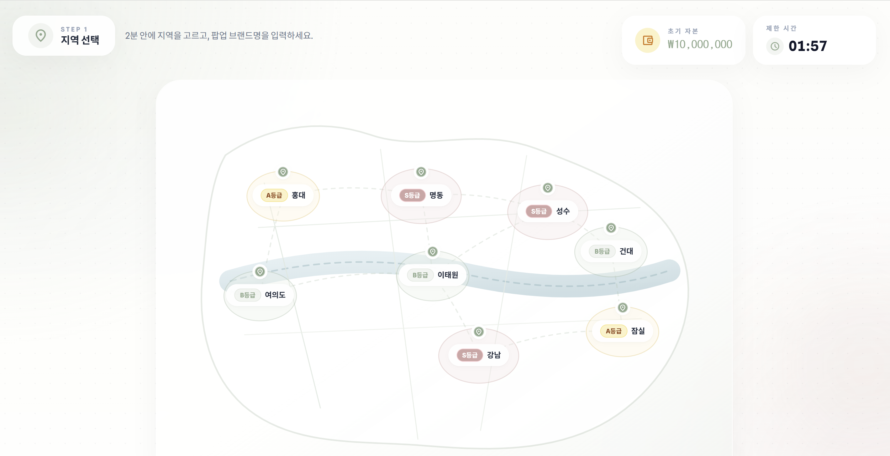
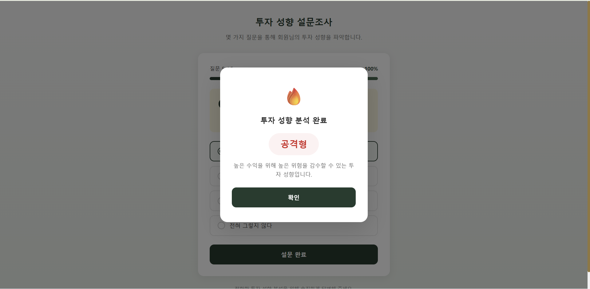

채지원
Portfolio
기획부터 배포까지 서비스 전체를 설계하고, 도메인 데이터를 코드로 연결하는 풀스택 개발자입니다.

버블팝업
실제 뉴스 데이터 기반 트렌드 분석이 게임 플레이에 영향을 주는 실시간 팝업스토어 경영 시뮬레이션 · SSAFY 빅데이터 분산 도메인 우수상
React 19 · TypeScript · Three.js · Spring Boot · Redis · HDFS · Spark · KoNLPy · AWS EC2/S3 · GitLab CI/CD


3D 서울 지도 — V1 → V2 → V3 진화
- V1 (수동 좌표): 8개 구역 꼭짓점을 직접 입력. 빠른 프로토타입이었지만 정확도 낮음.
- V2 (공유 꼭짓점): 인접 구역이 경계를 공유하도록 개선. 틈새·겹침 해결.
- V3 (공공 GeoJSON): 서울시 공공 GeoJSON 직접 가공. Douglas-Peucker로 좌표 포인트 60% 감소. 한강 메시 별도 생성.
Unity + React 하이브리드 UI
- 레이어 구조: Unity 3D 배경 위에 React bg-transparent 오버레이. z-index 충돌 문제 직접 해결.
- 5개 액션 모달: 발주·가격·홍보·인플루언서·이벤트. ModalWrapper 공통화로 일관된 진입/퇴장 애니메이션.
인증 — Zustand + failedQueue
- 401 응답 시 failedQueue 패턴으로 동시 갱신 요청 처리. 토큰 갱신 도중 들어온 요청을 큐에 보관, 갱신 완료 후 일괄 재전송. 무한루프 방지 로직 별도 구현.


아마Get돈
20~30대 초보 투자자를 위한 투자 성향 기반 맞춤 학습 + 모의투자 금융 학습 플랫폼
React 18 · TypeScript · lightweight-charts · Spring Boot 3 · JPA · Redis · FastAPI


FE 핵심 구현 6가지
lightweight-charts 기반 주식 시세 시각화. 컴포넌트별 폴링 주기 분리 — 실시간 1초, 내종목 7초, 차트 6분.
평일 09:00~15:30 체크 함수. 장 마감 후 폴링 자동 중단 → 일일 ~50,000건 → ~20,000건(60%↓). 도메인 규칙이 코드를 설명.
클릭 즉시 UI 반영, 서버 실패 시 rollback. UX 지연 없음.
닉네임·성향 변경 시 window.dispatchEvent. 전역 상태 대신 느슨한 결합 선택.
Private(로그인), Public(비로그인), Survey(성향 미완료). 서비스 접근 제어 전 체계 설계.
성향 분석 AI를 BE 경유하는 프록시 구조. 클라이언트가 FastAPI 직접 호출 안 함.

KEYWE
DID 기반 병원 통합 출입증 모바일 앱 · React Native (Bare) · Zustand · FCM · Credo
LG CNS AM Inspire Camp 1기 최종 프로젝트 대상(1위)